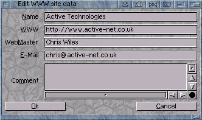
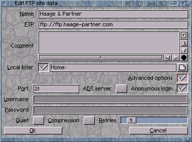
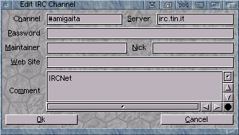

Voyager 3.5.2 (amigazen project). Original V3 manual by Chris Wiles, 1999.
3.72 Adding Bookmark Entries
WWW Entries

- Name: - the name of the web site. This can be anything. However, when you add web
sites to the Contact Manager, from your web browser, the name will be sent with the web site URL.
- WWW: - the actual web site URL. Remember to add http:// before the web site
URL, in order to send the correct address to your web browser.
- E-Mail: - the email address of the web master.
FTP Entries

- Name: - the name of your FTP entry. When you send FTP URL's from your web browser
or FTP client to Contact Manager, the name of the FTP site may be sent with the URL.
- FTP: - the FTP site or server. Remember to add ftp:// before the actual
URL entry so that when you send the FTP URL to your web browser, your web browser understands
that the URL is an FTP rather than a WWW server entry.
- Local lister: - the local lister or directory that will be opened within AmFTP
or DOpus Magellen when you connect to that server. For instance, if you were opening your
homepage FTP server, you might want a local directory listing of your homepage on your hard drive,
so you can quickly upload new files to the server.
- Advanced options - the Contact Manager supports some of the more advanced options
available to each server entry. See the advanced options section for more info.
Telnet Entries

- Channel: - the channel you wish to join. For instance, connect to irc.demon.co.uk
and you might want to join channel #amiga, or similar.
- Server: - the server you will use to connect to the channel. Remember not all channels
are available on every server! For instance the IRCnet #amiga channel is not available on Arcnet.